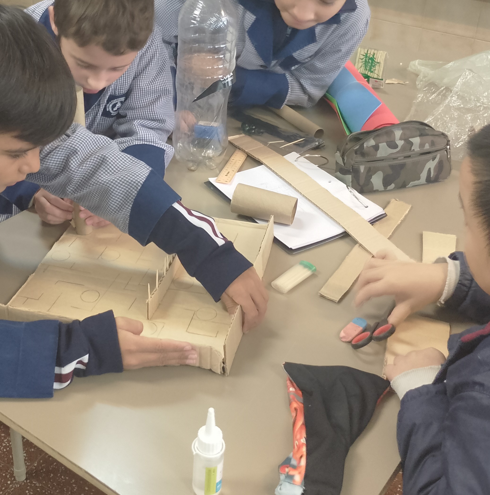

Proyecto N° 1: Pista de Canicas
Objetivo:
Comprender los conceptos básicos de energía y movimiento mediante la creación de una maqueta interactiva, analizando cómo diferentes factores influyen en el movimiento de las canicas.
- ¿Qué materiales utilizaron y cómo construyeron la pista?
- ¿Qué tipo de energía utilizan las canicas para moverse por la maqueta?
- ¿Cómo afecta la pendiente del circuito a la velocidad de las canicas?
- ¿Qué sucede cuando hay obstáculos en el recorrido?
- ¿Cómo puedes relacionar lo aprendido con alguna actividad o situación de tu entorno? Describe un ejemplo.


